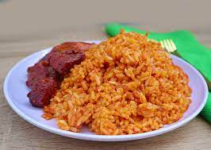

Jollof Rice

What is Jollof Rice?
it is a rich and incredibly rich, aromatic, tasty West African one-pot Meal. It’s similar to Jambalaya but with distinctive African spices. It consists mainly of cooked rice and tomato stew flavored with spices such as thyme, scotch bonnet pepper, onions, and garlic.
Nutritional profiles differ from one bean to the next. However, as an example, 1 cup (171 gram) of boiled pinto beans offers
- Calories: 393 grams
- Fat: 19% of the DV
- Saturated Fat: 1.2 grams
- Trans Fat: 0.4 grams
- Polyunsaturated Fat: 9.7 gram
- Mono unsaturated Fat: 3.7 gram
- Cholesterol : 0 mg
- Sodium: 478 mg
- Carbohydrate: 58 gram
- Protein: 5.4 gram
- Potassium: 242.1 mg
Ingredients needed to cook Rice
- Rice
- Canned tomatoes, fresh tomatoes, bell peppers, scoth bonnet, onions, garlic and ginger
- groundnut oil
- Stock chicken, beef or vegetable stock
- Seasoning and herbs - curly powder, salt, black/white pepper, bouillon powder, thyme and bay leaves
Steps to Cook Jollof Rice
- Sautee the Onions. stir in the tomato paste, this should take about 5 minutes
- Add the ginger and garlic and cook along with the tomato paste for another two minutes.
- Add the blended peppers and cook for about 5 - 10 minutes depending on the quantity of water added.
- Add the thyme, curry powder, salt, white pepper and seasoning cubes.
- Once the flavour is adequately done, stir the rice properly.
- Add the chicken stock and cover it up with a tight-fitting lid after giving it a brief stir
- Once the rice boils, reduce the heat to medium low immediately and continue to cook until the rice is done. this should take about 20 - 30 minutes